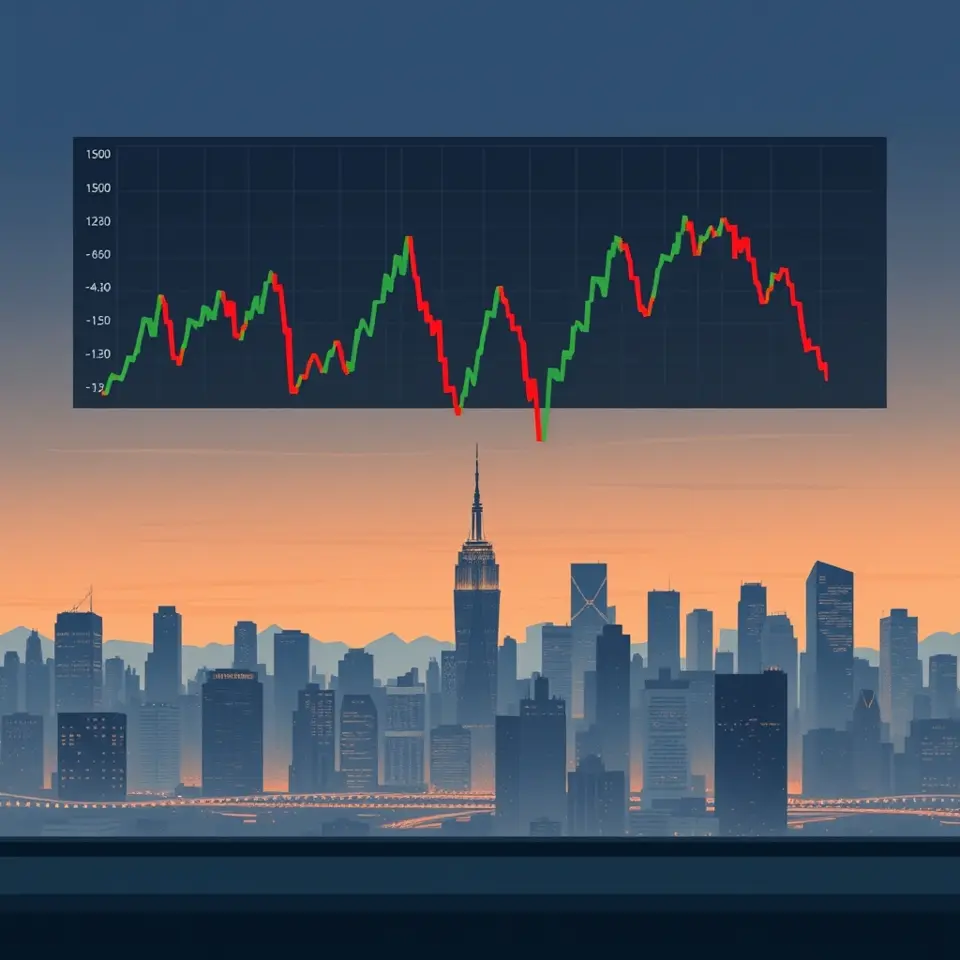
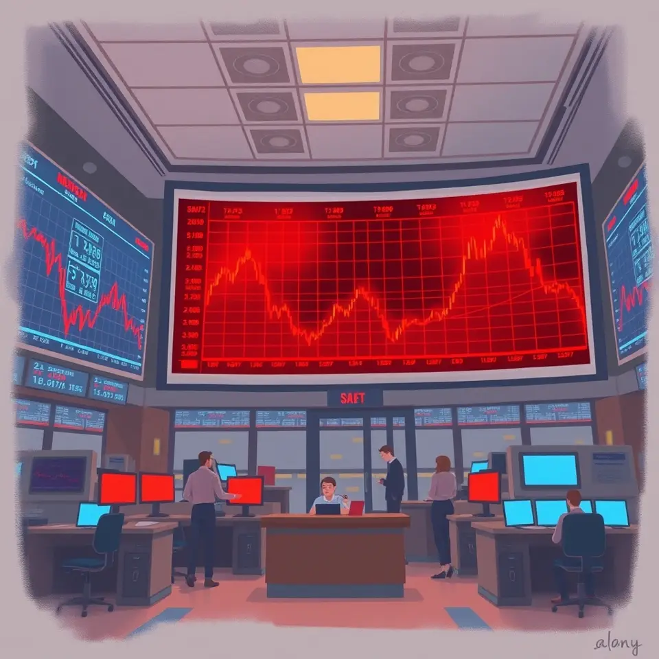

경제

베선트 美 재무 "과도한 금리 인상 불필요"…연준에 열린 시각 요구
베선트 재무장관은 잡음이 큰 물가 수치에 과도하게 대응할 필요가 없다고 밝혔다.

산업장관 “체코 원전사업 완수, 결과로 책임”
김정관 산업부 장관이 체코 측에 원전 일정 준수를 약속했고, 한수원은 시공사 선정 일정을 점검했다.

대만 매체, 젠슨 황 관련 의혹 제기…엔비디아 리더십 흔들
대만 매체가 엔비디아 관련 인물의 중국 국가안전부 연관 의혹을 보도하며 파장이 일고 있다.
젠슨 황 떠난 엔비디아, 새 수장의 과거 평가 주목
엔비디아 임시 CEO가 젠슨 황으로부터 받은 평가가 알려지며 화제가 됐다.
구글 지도, 내년부터 보안 조건 충족 기능 강화
구글 지도가 내년부터 보안 조건을 충족하며 기능이 크게 바뀔 것으로 보도됐다.
 AI 이미지
AI 이미지정부 "정유사 손실, 국제가격 대로 보전 못 해"
정부가 석유 최고가격 동결에 따른 정유사 손실을 국제가격 기준으로 보전하기 어렵다는 입장을 밝혔다.
젠슨 황 엔비디아 CEO 퇴진 소식에 직원 반응 이어져
젠슨 황을 둘러싼 논란이 커지며 엔비디아 내부 반응과 대미 수출통제 전망이 함께 보도됐다.

AI 이미지젠슨 황 리스크에도 삼성전자·SK하이닉스 강세
엔비디아 관련 불확실성 속에서도 코스피 반도체 대형주는 강세를 보였다.
 AI 이미지
AI 이미지석유 최고가격 12차도 동결…휘발유 1784원·경유 1773원
12차 석유 최고가격제에서 휘발유와 경유 가격이 동결됐다.

산업부 “석유 최고가격제, 내년 유지 여부는 미정”
산업통상부는 석유 최고가격제를 민생 방파제로 설명하며 내년 유지 여부는 아직 정하지 않았다고 밝혔다.
젠슨 황 소식에 코스피 장중 3% 오르다 하락 마감
코스피는 장중 3%까지 올랐으나 0.98% 하락한 5200선에서 마감했다.

코스피 5200선 마감…외국인 매도에 반도체주 약세
코스피가 장중 5500을 찍은 뒤 하락 전환해 5200선에서 마감했고 반도체주가 약세를 보였다.

세종에 맥도날드 첫 매장…1호 고객 새벽부터 줄
세종시에 맥도날드 첫 매장이 문을 열며 개점 전부터 오픈런이 이어졌다.
구글, 국내 고정밀 지도 반출 조건 충족…국내 지도 업계 경쟁 예고
정부가 구글의 고정밀 지도 반출 조건 이행을 확인했으며 내년부터 서비스가 강화될 전망이다.
엔비디아 충격에 코스피 흔들…하이닉스 3% 급락
젠슨 황 사임 여파 속 반도체주가 약세를 보이며 코스피가 하락 흐름을 보였다.

국토부 구글 고정밀 지도 좌표 제거·영상 보안 처리 이행
국토교통부는 구글이 고정밀 지도의 좌표 제거와 영상 보안 처리 조건을 이행했다고 밝혔다.
이 대통령, 주식시장 개혁기구 설치 방침 밝혀
이 대통령이 M&A 활성화와 자본시장 신뢰 회복을 강조하며 주식시장 개혁을 예고했다.

강남3구 이어 강동·성동까지…국토부 “서울 집값 하향 안정 지표 확대”
강남3구에 이어 강동·성동에서도 아파트값 하락세가 나타났고, 국토교통부는 서울 집값 안정 지표 확대를 강조했다.

정진완 우리은행장, 1년 연임 확정…임기 1년 연장
정진완 우리은행장이 1년 연임하며 임기가 1년 연장됐고, 금융사고와 수익성 격차는 과제로 남았다.
 AI 이미지
AI 이미지정진완 우리은행장 연임…임기 1년 연장, 과제는 여전
우리은행이 정진완 행장의 1년 연임을 확정했으며, 수익성과 리스크 관리가 향후 숙제로 꼽힌다.
정부, 구글 고정밀 지도 보안 조건 이행 확인
정부가 구글의 고정밀 지도 반출 조건 이행을 확인하며 국내 지도 서비스 경쟁 구도에 변화가 예상된다.

환율·유가 동반 하락에 10월 수입물가 1.8% 하락
환율과 국제유가가 함께 떨어지면서 10월 수입물가가 1.8% 낮아졌다.
정부 “구글, 국외반출 고정밀지도 보안처리 이행” 확인
정부가 구글의 국외 반출 고정밀 지도에 대해 보안 조건 이행을 확인했다.
정부, 구글 고정밀지도 보안 조건 이행 확인
정부가 구글의 고정밀지도 좌표 제거와 영상 보안처리 이행을 확인했고, 국내 제휴사는 티맵으로 선정됐다.

AI 이미지이 대통령 주식시장 저평가 바로잡겠다
이재명 대통령이 한국거래소를 찾아 자본시장 정상화와 시장 신뢰 회복을 강조했다.
빨간 넥타이 이 대통령 한국거래소 방문
이재명 대통령이 빨간 넥타이 차림으로 한국거래소를 찾아 주식시장 우상향을 바란다고 밝혔다.
이 대통령 “국내 주식 저평가는 비정상…자본시장 정상화”
이 대통령이 국내 증시 저평가를 비정상으로 규정하고 자본시장 정상화를 확고한 정책 방향으로 제시했다.
 AI 이미지
AI 이미지서동주 “월급 전액 비트코인 투자, 3개월 만에 3배”
방송인 서동주가 월급 전액을 비트코인에 투자해 3개월 만에 수익이 세 배가 됐다고 밝혔다.
‘AI 인프라 황제’ 젠슨 황, 불륜으로 엔비디아 CEO 사임
AI 반도체 기업 엔비디아의 젠슨 황 최고경영자가 불륜 문제로 사임했다고 보도됐다.
세제 개편에 재초환 부담까지…강남 3구 하락세 지속
세제 개편과 재건축초과이익환수제 부담이 겹치며 강남 3구 집값 하락세가 이어지고 있다.
국가부채는 공짜 점심 아냐, AI 거품 꺼지면 한국 고통 커
국가부채 증가의 위험과 AI 거품 붕괴 시 한국 경제에 미칠 타격에 대한 경고가 제기됐다.